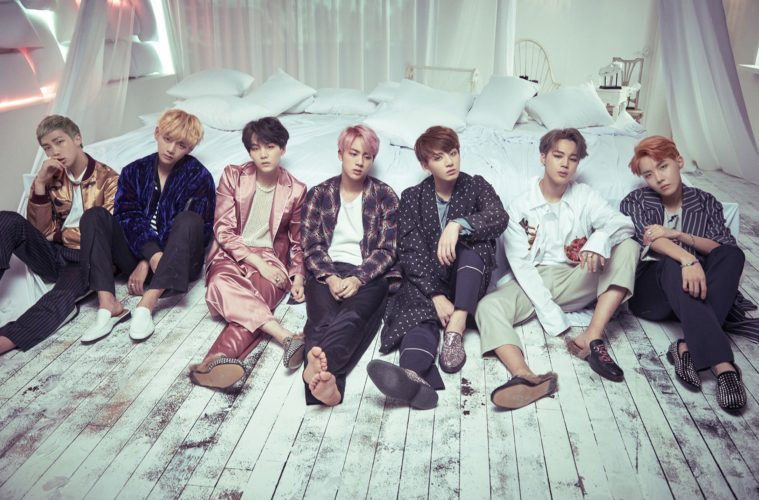

Summary
BTS (Korean: 방탄소년단; RR: Bangtan Sonyeondan), also known as the Bangtan Boys, is a seven-member South
Korean
boy band that was formed in 2010 and debuted in 2013 under Big Hit Entertainment. The septet—composed of
Jin,
Suga, J-Hope, RM, Jimin, V, and Jungkook—co-writes and co-produces much of their own output. Originally
a hip
hop group, their musical style has evolved to include a wide range of genres.
Formation and Early Years
BTS began its formation in 2010 after Big Hit Entertainment CEO Bang Si-hyuk met with group leader RM
and was
impressed with his rapping. The lineup was finalized with Jin, Suga, J-Hope, RM, Jimin, V, and Jungkook
in
2012 when Jin, the oldest member of the group, was twenty-years-old. Six months prior to their debut,
they
began to gain attention for their presence on various social media websites, as well as song covers on
YouTube
and SoundCloud.
Mainstream and International Breakthrough
In November 2017, BTS became the first K-pop group to perform at the American Music Awards, raising
their
profile internationally. That same month, Guinness World Records revealed that BTS had earned a spot in
their
2018 edition for "having the world's most Twitter engagements for a music group". In December, they also
became the first K-pop group to perform on Dick Clark's New Year's Rockin' Eve to welcome the new year
and
made their Japanese TV music show debut on TV Asahi's Japan Music Station Super Live.
Cultural Impact
Billboard's Senior Vice President Silvio Pietroluongo said that BTS are comparable to and as influential
as
the Beatles and the Monkees. Nielsen Music Vice President Helena Kosinski said that "although BTS
weren't the
first to open the doors to K-Pop worldwide, they were the first to become mainstream. They don't just
appeal
to young people but also to the 50s and 60s age demographic." As the first non-English speaking artist
to
make the Global Artist Chart in 2018, BTS had the second and third best-selling albums worldwide and
were the
second best-selling artists worldwide in terms of physical, digital, and streaming platforms, coming
second
only to Drake.
Photos
BTS members posing for a fashion photoshoot
BTS members hanging out in Seoul after a long concert season is over
BTS members showing off new hairstyles

BTS members posing in their bedroom
News
New album "You are so beautiful" to be released globally on September 20, 2021!!!
BTS visit to Singapore on September 27-28, 2021